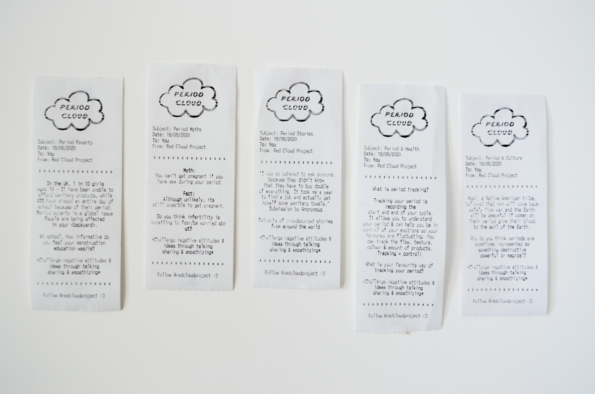
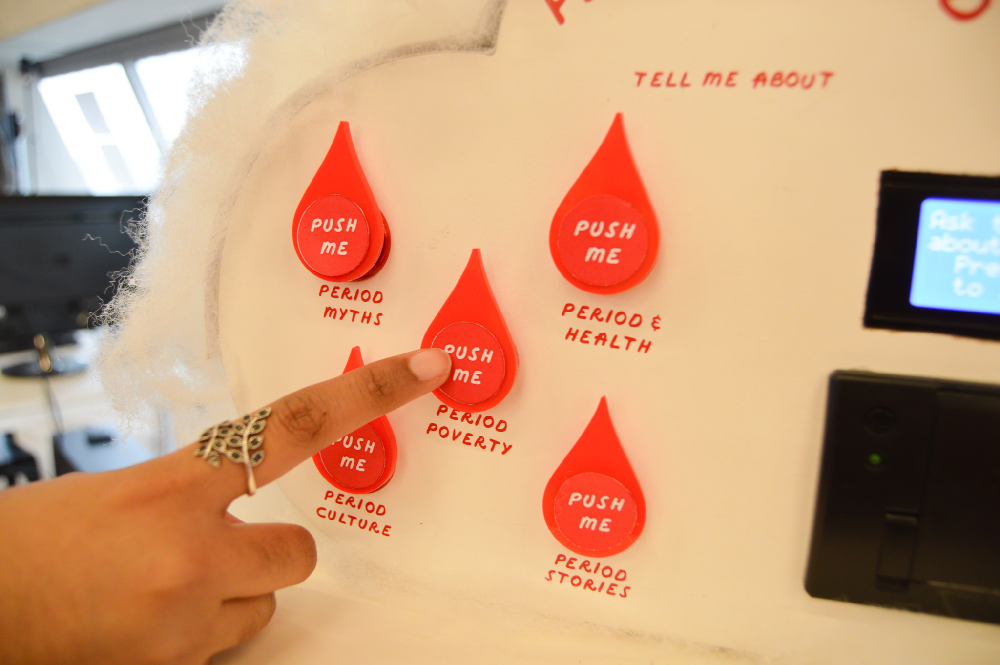
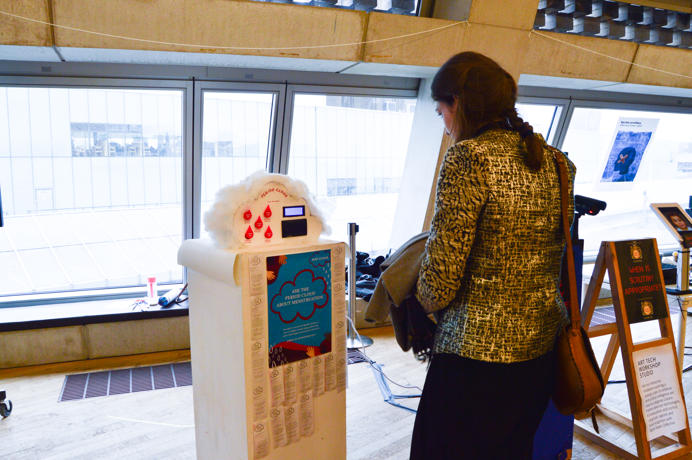
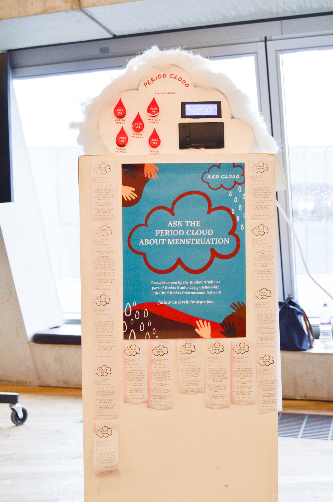
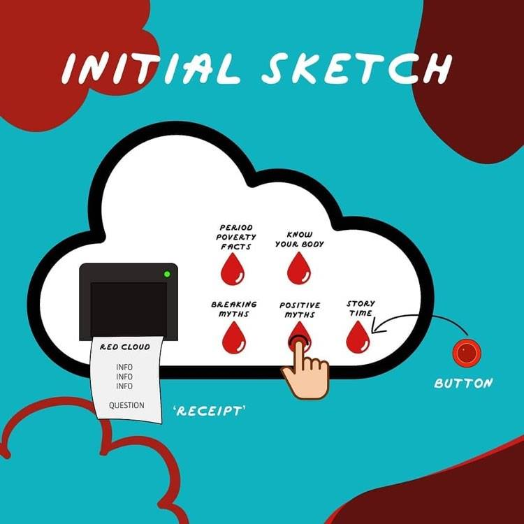
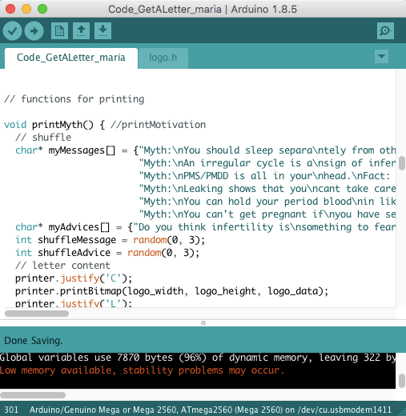
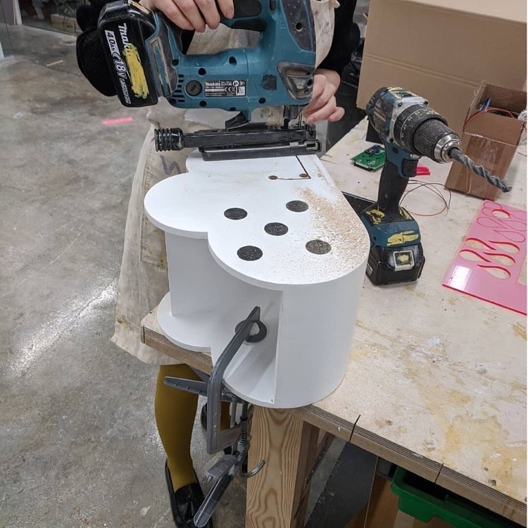
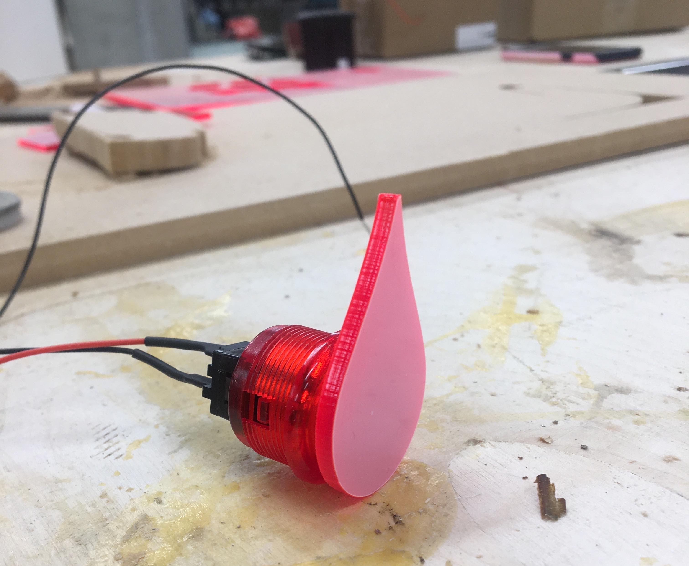
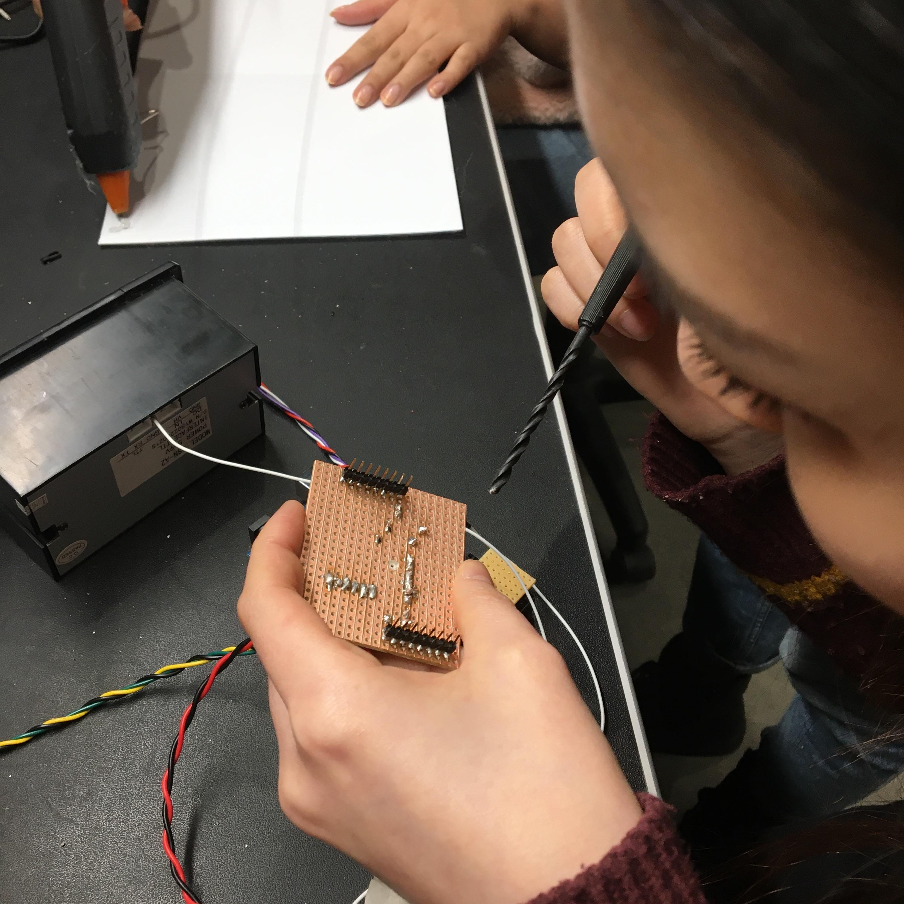

Documentation video of the workshop and print outs (above)
Some photos of The Period Cloud installation taken during the Tate Exchange: Uni2Unicorns event (below)




Below are some process photos of building the piece (below)





The Period Cloud
Period Cloud, an interactive printing machine providing factual information on menstrual health and period poverty, crowdsourced stories about anything period-related, and positive stories of menstruation across cultures and religions.
The user simply presses a button and learns something new about periods. Our aim is to encourage discussion around periods and to open up the conversation as much as possible. The receipt acts as a springboard for dialogue, or simply for the user to reflect on the content. This was a way for us to explore alternative and creative ways of delivering knowledge or engaging with our audience. All content were extracts from our upcoming book.
The Period Cloud was showcased at Tate Exchange, Tate Modern during International Women’s Day 2020.
Process:
As we were writing our book, we wanted to explore alternative ways of sharing knowledge and engaging audiences in discussing important social topics in public or community spaces. Activism starts with a conversation or simply sharing your opinion.
First, we looked for a way to store the information and found a storage box shaped as a cloud. We then carefully planned out what each of the 5 buttons, screen and printer were going to do. As the storage box was made from wood we were able to drill 5 large holes in the correct size to fix each bottom using an electric hole saw in the UAL Camberwell workshop. We then laser cut the red drops to attach onto the buttons. Using a silhouette machine we created the labels.
Tech-wise, we used the Arduino microcontroller, a thermal printer and a LCD screen. One of our team members is a Masters student in Creative Computing who has tested the tech beforehand. Once we had programmed the buttons to the printer and screen, we assembled the cloud and tidied up the wires for the final prototype.
Roles:
Content Writing
Product Design
3D Building
Electrical Engineering
Arduino Programming (with C-language)